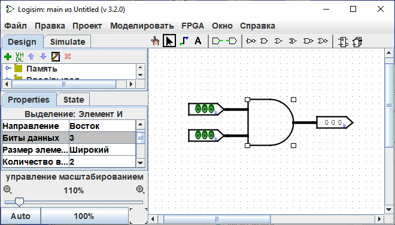
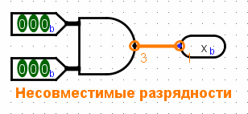

Создайте кабельные пучка.
В простых схемах Logisim большинство проводов несут только один бит, но Logisim также позволяет вам создавать провода, связывающие вместе несколько битов. Количество битов, проходящих по проводу - это Биты данных данного провода.
Каждый вход и выход каждого компонента в схеме имеет разрядность, связанную с ним. Часто разрядность равна 1, и нет никакого способа изменить это, но многие из встроенных компонентов Logisim включают атрибуты, позволяющие вам настроить разрядности их входов и выходов.
Снимок экрана ниже показывает простую схему для вычисления побитового И между двумя трёхбитными входами. Обратите внимание, что трёхбитный выход является побитовым И для двух входов. Все компоненты были настроены для работы с трёхбитными данными через их атрибут Биты данных; снимок экрана показывает атрибуты элемента И, включая атрибут Биты данных, имеющий значение 3.

Все компоненты Logisim определяют разрядность для каждого входа и выхода. Разрядность провода, напротив, не определена: вместо этого она подстраивается под компоненты, к которым провод присоединён. Если провод соединяет два компонента, требующие разную разрядность, Logisim пожалуется на "Несовместимые разрядности" и обозначит вызывающие проблему участки оранжевым цветом. Ниже атрибут Биты данных выходного контакта изменён на 1, так что Logisim жалуется, что провод не может соединить трёхбитное значение с однобитным.

Провода, которые соединяют несовместимые участки (отрисованные оранжевым), не передают значения.
Для однобитных проводов вы сразу можете увидеть, какое значение передаёт провод, потому что Logisim окрашивает провод в светло- или тёмно- зелёный в зависимости от значения. Значения, передаваемые многобитными проводами не отображаются: они просто чёрные. Вы можете, однако, исследовать провод, щёлкнув на нём Инструментом Нажатие ( ).
).

Эта возможность исследования полезна для отладки схем, использующих пучки проводов.
Далее: Разветвители.